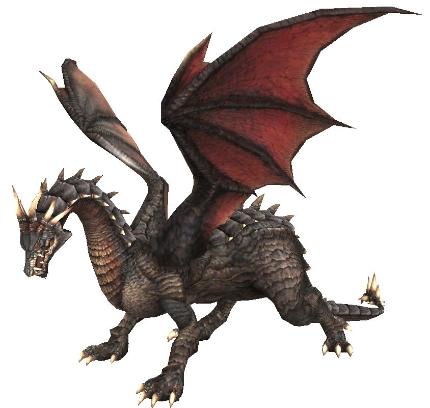
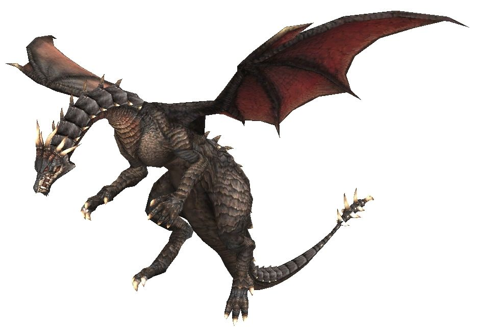
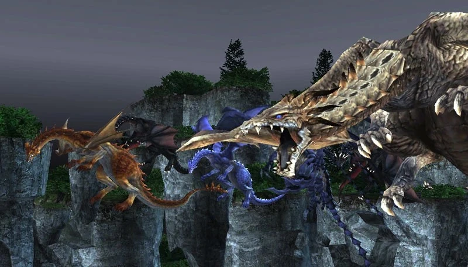

Level 75 reference · Zenith rules
General Information
|
 Image source Image source |


.jpg){kind=link}
General Attacks
| Special Abilities | Original and Zilart Areas | Promathia Areas | ||
| Spike Flail: Extreme damage AOE attack used only when the wyrm attempts to use a weaponskill when it is attacking with its tail. This move will generally one-hit KO everyone in the AOE. Absorbed by 3 shadows of Utsusemi. | ||||
| Horrid Roar: Single-target dispel attack that removes buffs. On CoP wyrms (Tiamat, Ouryu, Jormungand, and Vrtra), Horrid Roar removes all buffs including food and resets hate by a large amount. On Fafnir, Horrid Roar will remove a single buff, with a little bit of hate reset. On Nidhogg, Horrid Roar will remove all buffs including food, with a moderate amount of hate reset. | ||||
| Absolute Terror: Induces Terror for a long period of time. Ouryu's Absolute Terror is Area Effect, while for other wyrms it is single target. | ||||
| Wing: 30' AoE magic damage attack caused by the wyrm flapping its wings. The element of the damage and the status effect incurred by it varies from wyrm to wyrm. | ||||
| Breath: A Breath Attack of the Wyrm's element. Standing on the Wyrm's front feet avoids most damage from Breath. | ||||
| Magic: Wyrms may use magic based on their color. For example, Tiamat is red and uses Fire-based spells. Fafnir and Nidhogg do not use magic, however. | ||||
| Draw In: If the person that is #1 on the wyrm's hate list that is out of attack range, the wyrm will rarely go looking for that person. Wyrms will draw-in that person into attack range. Wyrms may drawn in several people in at once anywhere in the zone. | ||||
| Note: Notorious Monsters in this family may use all of the above and/or additional unique special abilities. | ||||
Notorious Monsters in Family
| Name | Spawn Information | Level | Zone | Color | Abilities |
|---|---|---|---|---|---|
| Fafnir | 21-24 hour spawn in intervals of 30 minutes, at every half hour. i.e. 21, 21.5, 22, 22.5...) | 88-90 | Dragon's Aery | Gray | |
| Nidhogg | Lottery pop of Fafnir. Earliest spawn is 4 days after the last Nidhogg spawn but can take over 10 days to appear. | 90 | Dragon's Aery | Gray | |
| Tiamat | 3 - 5 Day Spawn (72-120 hours after last kill) | 95 | Attohwa Chasm | Orange | Mighty Strikes |
| Vrtra | 3 - 5 Day Spawn (72-120 hours after last kill) | 95 | King Ranperre's Tomb | Dark | Charm, Summon Undead |
| Jormungand | 3 - 5 Day Spawn (72-120 hours after last kill) | 95 | Uleguerand Range | Purple | Blood Weapon |
| Ouryu | Spawned during Ouryu Cometh BCNM. Requires Cloud Evoker to enter BCNM. | Monarch Linn | Beige | Invincible | |
| Wyrm | Spawned during Early Bird Catches the Wyrm BCNM. Requires Themis Orb to enter BCNM. | Balga's Dais | Gray |



Image source
Adapted from Eden Wiki: Category:Wyrm · Contributors and history · CC BY-SA 4.0. Revision 5711. Layout, links and optional background text adapted for Zenith.